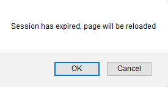

| Ignore | If integrated security is not enabled, actions that are solved using AJAX are executed even if the web session has expired. If integrated security is enabled and an action that is solved using AJAX is executed, the user will be redirected to the login page. This is the default value |
| Warn | When the web session expires or if it is invalid, a warning message will be displayed suggesting the user to refresh the page to get a new WebSession |
Objects: Transaction, Web Panel
This helps to alert users that a redirect will be done so they can avoid losing the changes they have made on the page (by pressing the cancel button).

The security level of both values is the same.
1. In a load balancing environment, it's necessary to have Server Affinity or any way to persist the web session among the servers; otherwise, the results will be unpredictable.
2. When GAM is activated in the KB, if the "On session timeout" property is set to WARN and GAM session timeout expires, the session expiration warning message will also be displayed, even though that session timeout does not expire on the server.
This helps to alert the user that a redirect will be done (to the GAM login object); in this case, he will lose his work unless he cancels in the session timeout alert box and saves his work before the redirect takes place.
The behavior described in this document is valid for Web User Experience property = Smooth, since GeneXus X Evolution 3 upgrade 9.
For Web User Experience property = Previous versions compatible or GeneXus X Evolution 3 upgrade 8 or previous, the behavior is as described in On Session Timeout property.
This property applies only at design-time.
To apply the corresponding changes when the property value is configured, execute a Rebuild All.
For Smooth models (since GeneXus X Evolution 3 upgrade 9), the On Session Timeout property is independent of the parameter encryption mechanism of the AJAX calls.
| Backlinks |
| Load balancing considerations |